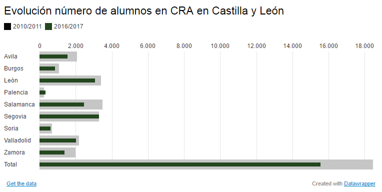
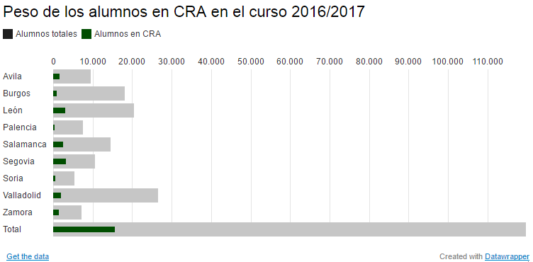

La segunda década del siglo no anuncia un futuro próspero para la educación rural en Castilla y León. Entre 2010 y 2017 se han perdido 2.912 alumnos en los Centros Rurales Agrupados (CRA) de la Comunidad, un 15,8%, frente al 3,7% del conjunto de la educación pública. Es decir, aunque toda la región pierde alumnos, el descenso es bastante más acusado en las localidades más pequeñas.
En estos siete años se han cerrado 364 clases, todas en educación infantil, mientras en Primaria solo se han abierto dos. Los números anuncian que las aulas empezarán a cerrar pronto en Primaria y muestran que la caída de la población y la natalidad se acelera en los últimos años.
Aunque en Castilla y León la inmigración nunca ha sido tan decisiva como en otras regiones, la causa principal del éxodo reside ahí. “En tres años estamos perdiendo muchas unidades”, reconoce Pedro Escolar, portavoz del sindicato educativo Stecyl durante 16 años. “Desde 2002 hasta 2012 se notó positivamente la inmigración en los matriculados en Primaria. Sirvió para interrumpir la curva de caída atroz de los 90, pero en 2012 empezaron a marcharse inmigrantes coincidiendo con el pico más negro de la crisis”. Según el INE, entre 2010 y 2016 se han perdido 6.832 niños no españoles de hasta 14 años en la Comunidad.
El descenso ha provocado el cierre de 11 centros desde 2010: Pampliega, en Burgos; Almanza y San Cristobal de la Polantera, en León; Alto Alagón, Campo de Peñaranda, Manuel Moreno Blanco y Miguel Delibes, en Salamanca; Campos de Castilla y El Mirador de la Sierra, en Segovia; y Coreses, en Zamora, solo compensados por los dos nuevos abiertos en Segovia: San Rafael y Sangarcía.
La desaparición de alumnos, además, arroja bastantes desigualdades entre provincias. Mientras que en Zamora y Salamanca la caída ronda el 30%, en los centros de Segovia solo hay un niño menos siete años después y en Palencia han aumentado un 30%, con 81 más.
La historia explica las diferencias
Los escasos 334 alumnos de la provincia palentina distorsionan la comparativa. Pese a su gran dispersión (apenas cinco municipios superan los 5.000 habitantes), cuenta con solo dos CRA, el del Cerrato en Tariego de Cerrato y el Campos de Castilla en Becerril de Campos. El resto de niños fuera de la capital se desplazan hasta colegios comarcales. La situación contrasta con Segovia, la provincia con menor extensión de la región y, sin embargo, la única que ha creado CRA y mantiene 17 bien poblados de alumnos.
Palencia fue una de las provincias elegidas para la prueba piloto de la implantación de la Ley General de Educación de 1970 impulsada por el ministro franquista José Luis Villar Palasí.
El contraste tiene una razón histórica. Palencia fue una de las provincias elegidas para la prueba piloto de la implantación de la Ley General de Educación de 1970 impulsada por el ministro franquista José Luis Villar Palasí. La norma que inventó la EGB creó también los colegios públicos comarcales en localidades cabeceras de comarca para acabar paulatinamente con las escuelas de los pueblos más pequeños, por lo que los palentinos se adaptaron desde los años 70 a desplazarse para ser educados.
“En Palencia se comarcalizó absolutamente todo. Cuando los niños llegaban a la segunda etapa de EGB trataron de concentrarlos en los colegios comarcales para que se desarrollaran con especialistas (de idiomas, de educación física, de música). Si en un pueblo con pocos niños, mandas bastantes a otro, caen las unidades rurales”, explica Pedro Escolar.
Ese cierre de escuelas rurales encontró en otras provincias un movimiento más contestatario de ayuntamientos, padres y profesores que acabó en 1986 en la invención de los Centros Rurales Agrupados en los que los pueblos mantenían las aulas abiertas a cambio de unirse bajo la dirección de un mismo centro instalado en uno de ellos. En lugar de moverse los alumnos en autobús, lo harían los profesores de especialidad en sus coches entre los distintos puntos del CRA.
Los intereses de los pueblos para fijar población coincidieron con los de los profesores, que iban a recibir compensaciones por kilometraje, horas y seguros de desplazamiento y el derecho a decidir voluntariamente si querían trabajar en el medio rural. “Para los profesores ha sido el mejor invento del mundo, porque ha ayudado a mantener y crear empleo. Con la concentración comarcal solo nos habrían necesitado a la mitad”, afirma tajante Escolar, que reconoce el beneficio a largo plazo del modelo, pese a que trabajar en el medio rural esté normalmente en las antípodas de las preferencias de los docentes.
Y en el futuro, los institutos
El problema que se avecina en Castilla y León no se encuentra solo en los colegios, sino en los institutos del medio rural, alerta Escolar. Cuando los alumnos eligen un itinerario en Bachillerato y dentro de ese itinerario una optativa minoritaria, el número de alumnos puede no alcanzar los cinco alumnos, insuficiente para impartirla. “Y en ese caso funcionaría unir en una clase a 3 alumnos del 1º y 2 de 2º y atenderlos al mismo tiempo a que desaparezca la materia”, sugiere. Lo que en definitiva se aplica en el modelo CRA.